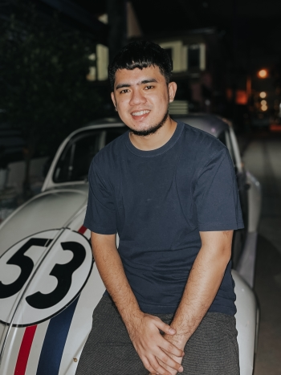

About.

Jan Kenneth V. Sajo
Front-end DeveloperHello! My friends call me Neth. I am a degree holder of Bachelor of Science in Information Technology, graduated from Lyceum of Alabang. My main focus are to enhance my web development skills and building interactive websites.
I am a passionate and pursuing web development. I have fond of creating beautiful and responsive layouts. I'm also interested in designing and photography.
Currently, I mostly work on personal projects and focuses more on modern web technologies. I'm always open to opportunities that could help myself grow.